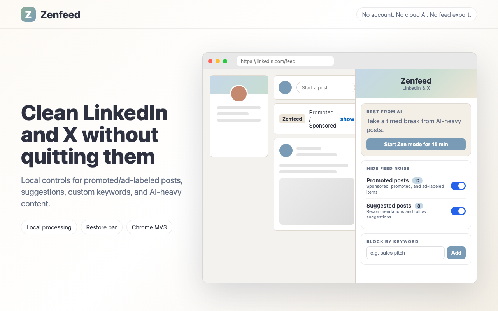

Every third post is AI.
Every feed is AI now. On LinkedIn and X, about one in three posts is AI-generated — enough that you can scroll right past the real posts from people you actually follow without noticing them. Rest from AI hides that content on a timer, custom keywords block specific posts for good, and promoted and suggested posts stay turned down the rest of the time.
Works on LinkedIn and X
